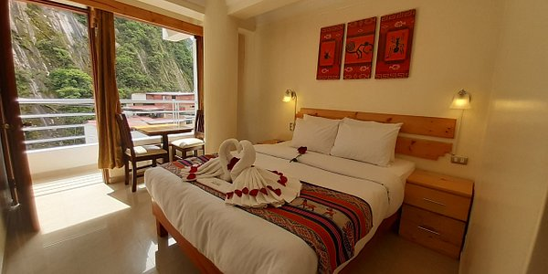

Ramada by Wyndham Costa Del Sol Cusco
El Ramada by Wyndham Costa del Sol Cusco
es una mansión reformada del siglo XVII
situada en el centro de Cuzco, a pocos
pasos de la plaza principal de Cuzco y
de la iglesia de La Merced
Golden Inca Hotel
El Golden Inca Hotel está situado
a 600 metros del centro histórico
de Cusco y ofrece habitaciones con
WiFi gratuita y un desayuno
buffet gratuito todos los días.

Nuestros convenios con Restaurantes
Greens Organic
Ubicado en el segundo piso de un edificio colonial,
con piedras talladas del incanato, Greens Organic es por
lejos
el lugar ideal para un snack saludable después de un cansado
día
en Cusco.
Incanto
Un vez fue el Palacio del Inca Túpca Yupanqui, ahora
un acogedor restaurante que combina la cocina italiana
y peruana. Ubicado al otro lado de la plaza principal
de Cusco.